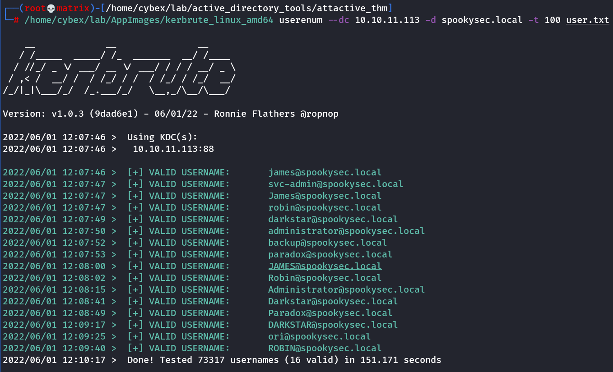

kerbrute
Kerbrutehttps://github.com/ropnop/kerbrute/releasesKerbrute has three main commands:
bruteuser - Bruteforce a single user's password from a wordlist
bruteforce - Read username:password combos from a file or stdin and test them
passwordspray - Test a single password against a list of users
userenum - Enumerate valid domain usernames via Kerberos
A domain (-d) or a domain controller (--dc) must be specified. If a Domain Controller is not given the KDC will be looked up via DNS.
By default, Kerbrute is multithreaded and uses 10 threads. This can be changed with the -t option.
Output is logged to stdout, but a log file can be specified with -o.
By default, failures are not logged, but that can be changed with -v.
Lastly, Kerbrute has a --safe option. When this option is enabled, if an account comes back as locked out, it will abort all threads to stop locking out any other accounts.
The help command can be used for more information
/home/cybex/lab/AppImages/kerbrute_linux_amd64 userenum --dc 10.10.11.113 -d spookysec.local -t 100 user.txt